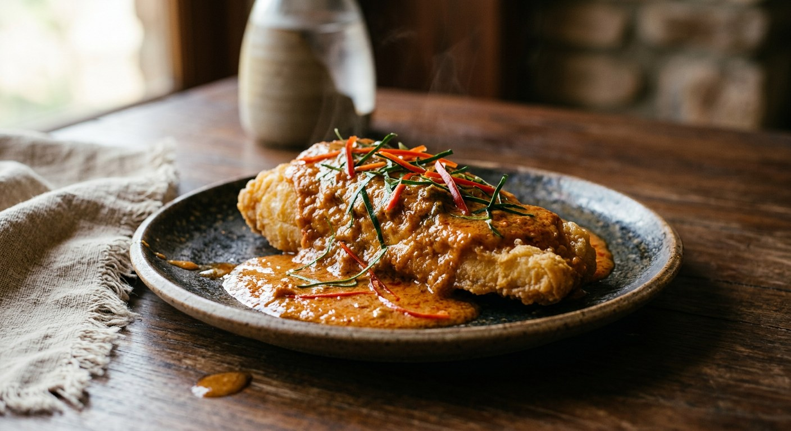

Curry paste fried in coconut cream until the oil beads out, poured over crisp fried fish, then finished with a tangle of sliced kaffir lime leaves and fresh chilli — the curry that coats rather than drowns.

ฉู่ฉี่ (chu chee) is not a coconut milk curry but a coconut cream curry — the thickest, glossiest sauce in the Thai repertoire, cooked down until it sits on the fish like custard rather than soup. Where other curries flood the plate, chu chee coats: every source here ends the dish the same way, with finely sliced kaffir lime leaves (ใบมะกรูดซอย) and sliced red chilli scattered over the top so the aroma hits before the first spoonful.
The method is what makes it. The cook fries the curry paste in coconut cream until the cream splits — the oil beads out and the paste turns deep red and glossy. Thai cooks call this หัวกะทิแตกมัน, and it is the same patient step that builds kaeng kua; skip it and the sauce stays pale and flat. Kapook's mackerel pot even adds water at this point and waits for the second split before the fish goes in.
The fish itself is negotiable in a way the cream is not. The classic restaurant chu chee is a fried fish — sea bass (ปลากะพง) or red tilapia (ปลาทับทิม) — with the sauce poured over, as in both Wongnai pots. But the curry is an old river-fish dish at heart, and Kapook's sheatfish recipe, taken from a Pantip cook, still makes it the traditional way: a fresh-pounded chilli paste, no coconut milk at all, the fish poached gently in the pan.
| Thai | English | Amount |
|---|---|---|
| ปลากะพง | Sea bass fillets (or one whole bream) | 500 g |
| น้ำมันสำหรับทอด | Oil for deep-frying | 500 ml |
| พริกแกงฉู่ฉี่ | Chu chee curry paste | 2 tbsp |
| หัวกะทิ | Thick coconut cream | 250 ml |
| น้ำปลา | Fish sauce | 1½ tbsp |
| น้ำตาลปี๊บ | Palm sugar | 1 tbsp |
| ใบมะกรูด | Kaffir lime leaves, finely sliced | 4 |
| พริกแดง | Red spur chillies, sliced | 2 |
| กะปิ | Shrimp paste (optional, Cookpad) | ½ tsp |
The poached pot (Kapook): 3–4 fresh mackerel, a third of a cup of ready-made red curry paste, 250 ml coconut milk, salt, sugar and soy or fish sauce — the fish poached in the curry and turned once, no frying. The whole-fish pot (Wongnai's red tilapia): a 1 kg fish deep-fried whole, the paste fried in plain oil with garlic and fingerroot, loosened with coconut milk and seasoned with oyster sauce, sugar and fish sauce. The river pot (Pantip via Kapook): sheatfish poached in a fresh-pounded paste of chillies, galangal, lemongrass and shrimp paste — no coconut milk anywhere — finished with sliced lemongrass.
Fried fish or poached fish. Both Wongnai recipes and Cookpad deep-fry the fish and pour or finish the sauce over it — the restaurant presentation. Kapook's mackerel pot poaches the fish from raw in the curry, turned once, no frying at all. Cookpad's compromise, frying to 50 per cent and finishing in the sauce, comes closest to doing both.
The paste itself. Four sources use ready-made chu chee or red curry paste. The fifth — Pantip's river-fish pot, republished by Kapook — pounds a fresh paste of spur chillies, bird's eye chillies, galangal, lemongrass, shallots and garlic, and skips the coconut milk entirely. It is still called chu chee, a reminder the name attaches to the treatment, not the tinned paste.
What fries the paste. Cookpad splits thick coconut cream first and fries the paste in the broken cream. GopOpOp fries it in the thin milk (หางกะทิ) and reserves the thick cream raw for the final drizzle. Wongnai's tilapia cook fries the paste in plain vegetable oil, garlic and fingerroot before any coconut milk goes in. Kapook starts with three spoonfuls of cream, then water, and waits for the split to come. Every road ends at the same glossy red paste.
The seasoning. Fish sauce and palm sugar (Cookpad, GopOpOp), oyster sauce with sugar and fish sauce (Wongnai's tilapia), plain salt, sugar and soy or fish sauce (Kapook's mackerel). The one point of agreement: chu chee should stay savoury-sweet, never cloying.
The garnish. Kaffir lime leaves and red chilli everywhere. The river-fish pot alone finishes with sliced lemongrass instead — the fresh-paste version's own signature.
This recipe is translated from the following Thai-language sources. Where they disagree, we've said so.
1. Wongnai — "ฉู่ฉี่ปลากระพงทอด" by GopOpOp (the fried sea bass pot; the cream drizzle; the recipe used here) — wongnai.com
2. Kapook Cooking — "ฉู่ฉี่ปลาทู สูตรพริกแกงสำเร็จรูป อร่อยหอมทำง่ายสไตล์ไทย" (the poached mackerel pot, from Pantip's Easy Food Good Health by Andy) — cooking.kapook.com
3. Wongnai — "ฉู่ฉี่ปลาทับทิม" by วิทยา (the whole fried red tilapia; oyster sauce and fingerroot) — wongnai.com
4. Cookpad — "ฉู่ฉี่ปลากะพง" by Yannaty Sangsan (the cornflour half-fry; the shrimp paste trick) — cookpad.com
5. Kapook Cooking — "ฉู่ฉี่ปลาค้าวพริกสด เมนูเด็ดจากปลาแม่น้ำ" (the river-fish pot with fresh-pounded paste, no coconut milk, from Pantip member Phorn_Kitchen) — cooking.kapook.com